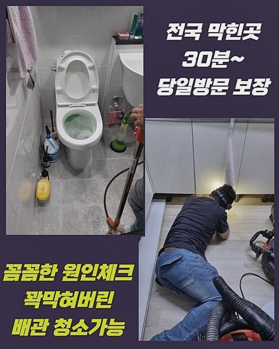
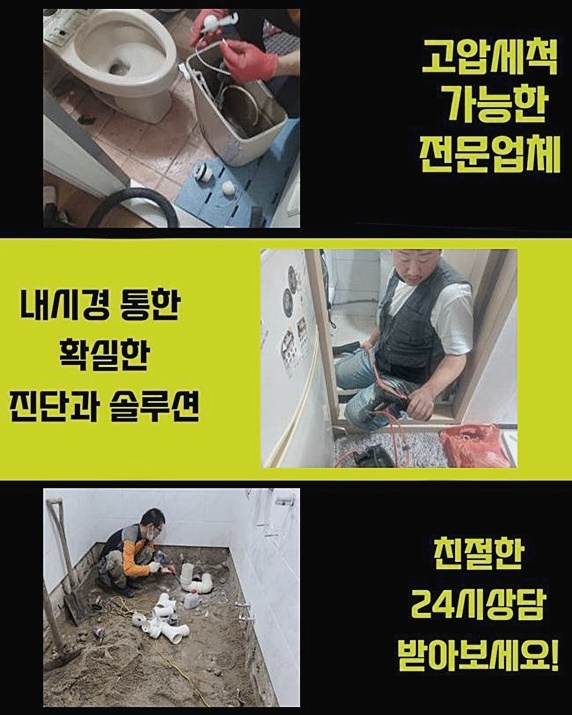
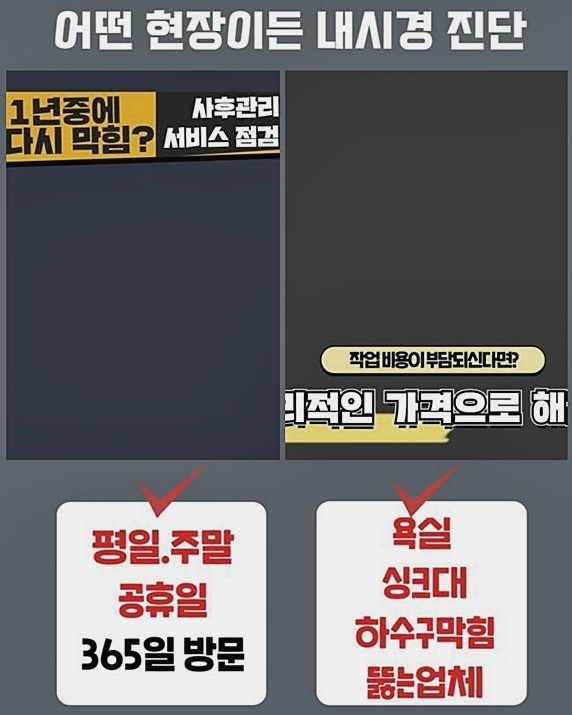
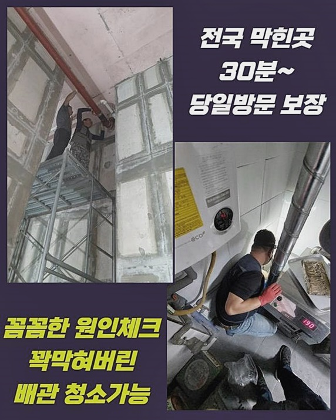
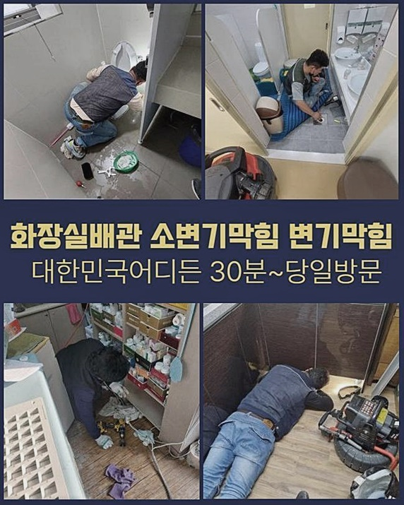
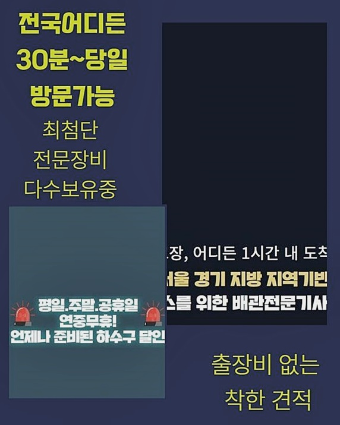

🏠 연수구 선학동하수구뚫음 송도 하수구뚫는비용 배관뚫는업체
용인 변기막힘 전문 시공 후기

📋 작업 개요
- 위치: 용인
- 서비스 유형: 변기막힘, 하수구막힘, 배관막힘, 뚫는업체, 고압세척
- 작업 일시: 2024. 7. 5. 18:44
- 업체명: 하수구수사대 (010-5615-2118)
🔍 문제 상황
연수구 선학동하수구뚫음 송도 하수구뚫는비용 배관뚫는업체
보통 화장실 영역은 활동하는 곳 중에서 수돗물 공급을 두드러지게 틀고 폐기하는 곳입니다
가볍게만 살펴보더라도 물이 빠지는 배수로와 변기 샤워부스와 욕조처럼 물을 기본으로 하는 설비가 다량 있다는 것을 숙지할 수 있는데요!
이처럼 복잡한 욕실 특성상 내부 하수구가 봉쇄되는 사건이 자주 형성 되어지는 지점이라고 할 수 있는데요
어느 날 갑자기 물 내려감이 중지됐는데 혼자서는 처리가 도통 안돼서 저희를 찾아주셨죠
장소에 도착한 뒤 어느 수준으로 막혔는지 육안 판별을 시행했는데 뿌연 하수가 배관으로 흔들림도 없이 정지해 있더라고요
세면대를 쓸 때마다 느린 유속으로 내려가는 조짐을 느끼긴 했으나 완전히 마비되어 물이 고여버린 지는 얼마 전에 시작된 변화라고 전해주셨어요
세안하는 세면시설은 씻으면서 때라거나 머리카락 및 기타 잡물이 흘러가면서 봉인될 가망성이 높은 편입니다!
화장실 시설물을 활용하는 게 한계가 있는 부분이어서 재빠르게 막힌 부분을 관통해 주는 작업에 돌입해 보도록 하겠습니다
무턱대고 기계들 부터 접촉시키는 게 아니라 배관 자체의 현상들을 세부적으로 관측하면서 처리 방향을 설립합니다
오늘의 특이점은 세면대 파이프가 마감재 내부로 숨겨진 상태였는데요

🔎 원인 분석
💡 전문가 진단: 정밀 진단 장비를 사용하여 슬러지의 고착 여부를 판명하고 타격/세척 작업을 실시했습니다.
눈으로 감별되는 부분에는 배관구조가 선명하게 감지되지는 않은 부분이라 상황에 따라 굴착이나 다소 규모가 큰 작업이 발생하기도 한다는 점을 사전에 양해를 구했습니다
건축 연식별로 배관 혹은 구조물의 특성에는 다른 양상을 띱니다
근래에 건설이 된 신축 아파트 케이스는 배수로들이 마감재 안으로 내장되어있을 경우가 많은데 냄새도 막아설 수 있고 더불어 외형적으로도 미니멀하게 다듬는 겁니다
무엇이 문제인지를 검출해 내기 위해서는 세면대 부속품을 먼저 분리 과정을 거친 후에 면밀히 살펴보려 합니다
오늘 본 곳은 빌딩이 만들어진 시점이 매우 예전인 장소가 아니었기에 배관라인 컨디션이 딱히 나빠지지 않고 온전한 상황이었어요
간혹 준공일이 매우 한참 됐다면 세면시설 부품까지도 녹슬고 부식해서 센 물살이 나가는 것만으로도 겉부분의 마개까지도 부서지고 붕괴되기도 합니다
그리고 배관이 막혀버린 증세가 장기화될 시에는 같이 조립된 부속품들이 다치기 좋은 환경으로 재탄생하게 되는 겁니다
내부 오염원에 따라서 충분한 변수는 있지만 끈적한 기름 때들로 중단이 일어난 곳이라면 습한 환경 내에서 균이 생기면서 불쾌한 구린내를 내부에 확산시켜요
함부로 건들지 않아야 하며 배관의 세부속성에 따라서 별도의 조치가 들어가야할 수 있으니 속성에 대한 상세한 테스트들을 거처가야 할테지요
안쪽 구조를 분석해 봤더니 냄새유입을 막는 p트랩으로 형성되어 있었기에 한 세대 안에서 수습이 불가하다 싶으면 바로 아래층에 말씀을 드리고 천장부를 떼내는 것이 절실할 때도 있습니다
문제를 겪은 당사자분의 댁 방문을 통해서만 매듭을 지을 수 있도록 열성을 다할 것이며 우선 현황판별을 위하여 배관카메라를 이용하여 상세하게 검토하겠습니다

🔧 작업 과정
폽업을 꺼내 보았더니 여러 오염물질들이 두툼하게 쌓여있었습니다
여러 거주자가 씻으면서 자연스럽게 흘러간 각질과 모발이나 비누 잔해들이 내측으로 유입되면서 틈도없이 차오른 거였습니다
팝업부분에 불순물이 강하게 결착하면 낄끔하게 신규 제품으로 교환하거나 약간만 손질해 주더라도 물의 이동성이 확보됩니다
세면대에서 튼 수돗물이 나아가지 못한다면 우선은 폽업의 근처가 저지된 상황과 전체 관로에 더럽혀진 경우로 세분화할 수 있는데요!
심층부에 이르기까지 노폐물이 침투해 버린 상태로 보였으므로 예리한 도구로 긁어내는 것이 들어가야함을 깨달았어요
밑으로 내려간 후 천정을 해체해야만 하는 필요성이 없을 듯 했고 해당 세대 안에서 위생 관리만 실시해도 가뿐하게 봉쇄된 측면이 나아질 수 있을 것이라 예측할 수 있었어요
실제로 착공을 해 보아야 인지할 수 있겠지만 일단 가늠해본 현황을 봤을 땐 하수구 고장이 발생한 세대에서 통수가 구현될 것 같았습니다
알아낸 결론은 고객님께도 소상히 자세히 알려드린답니다
스케일링 장치로 하수관 내측의 마비를 생성하는 이물질을 처리해야만 할것입니다!
이물질들의 분포 정도가 과다하다 판단됐기에 충분하게 실행을 반복해줘야 했네요
작업지의 특징에 따라 절대적인 시간의 경우는 달라지니 고정치는 없습니다
오래된 이물질이 집단적으로 경화되어 있거나 수량이 과도하게 쌓여있다면 투입되는 시간이 확충될 때도 있습니다
끈적하게 결착되어있는 찌꺼기들을 조금씩 꼼꼼히 세척하다보면 정화가 이루어집니다
스케일링 도구들과 배수로 카메라는 둘 다 얇은 관 형태로 제작되어 있으므로 같이 투입되며 실황을 파악하면서 장비를 핸들링할 수 있어요!
얼만큼 소강이 되었는지 지속적으로 체크업을 하면서 처치할 수 있으므로 꽉 막혀버린 상황을 말끔하고 상쾌하게 뚫어주고 소독하게 됩니다
하수관의 장애를 초래했던 잔뜩 오염되어 있던 찌꺼기들이 사라진 상태입니다
파이프 내부는 이제 방해하는 인자도 잔여하지 않는 고로 수돗물도 호쾌한 소리를 내며 콸콸 순조로이 이동하게 됩니다
작업의 완성도를 확인하려고 통수검사를 이행하면서 추가적인 걸림돌은 없는지를 심도있게 검증하여 마무리를 짓고 있으며 만약에 추가적 오류가 만들어지는 상황에서는 AS서비스 역시도 책임감있게 수행해 드리겠습니다!


✅ 작업 완료
세면대의 근방에 때가 많이 껴 있고 흉하게 녹이 발생해 있길래 전용세제로 닦고나서 마감을 알리게 됩니다
현장마다 투입되는 작업의 절차가 달라질 수 있기에 명확한 수준으로는 작업전에 책정된 가격을 제시하기는 어렵습니다
고객님 댁으로 찾아뵙고 내시경기기까지 도입하여 어떤 방식이 효율적일지 노선을 정립한 후에 구체적인 견적가를 도출해 드리고 있어요
추가적인 의문이 남아 있다면 작업할 때 언제라도 얼마든지 물어보세요
업계 경험이 많은 베티랑이 세부적 과정에 대한 설명을 브리핑을 해드리며 일하고 작업 중에 설비 비정상적인 면이 노출되고 담당한 배관 이외의 이슈가 만들어지는 상황에서는에도 추가적인 작업에도 돌입할 수 있으니 마음을 놓으셔도 됩니다




⚠️ 하수구 배관 막힘 예방 및 관리 가이드
- ✅ 머리카락, 비닐, 물티슈 등 물에 분해되지 않는 이물질은 하수구 유입을 절대 금지해 주세요.
- ✅ 하수구 거름망을 씌우고 모여진 이물질은 주기적으로 쓰레기통에 바로 비워주셔야 합니다.
- ✅ 배관 노후가 심할 경우 이물질이 더 쉽게 걸리므로 주기적인 배관 세척(고압세척 등)을 권장합니다.
- ✅ 작업 후 1년 이내 재발 시 하수구수사대에서 무상 A/S 보증 서비스를 제공합니다.
💡 핵심 정리
- 확실한 장비 작업(내시경 점검 및 샤프트 스케일링)으로 원인을 뿌리 뽑습니다.
- 작업 후 1년 이내에 동일한 부위 재발 시 100% 무상 A/S 서비스를 보장합니다.
- 서울 · 경기 · 인천 전 지역에 24시간 언제든 긴급 출동할 수 있도록 항시 대기 중입니다.
❓ 자주 묻는 질문 (FAQ)
🚨 용인 변기막힘 문제로 고민이신가요?
정확한 원인 진단과 확실한 시공으로 재발 없는 해결을 약속드립니다.
24시간 긴급 출동 | 서울 · 경기 · 인천 전지역 | 1년 내 재발 시 무상 A/S